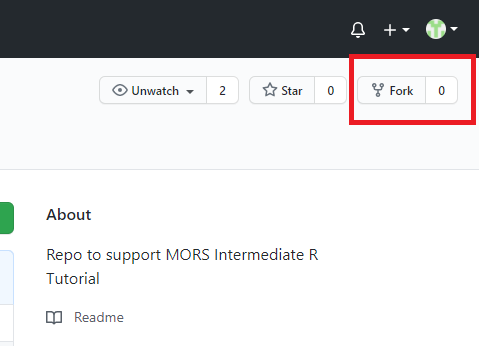
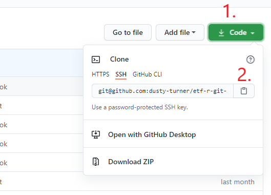

2 Introduction to git
Our first step today will be to use Git to download the files for the tutorial from GitHub.
Git is the world’s most widely used version control system. It is fast, flexible, and relatively easy to learn given its sophistication under the hood, making it an invaluable tool for collaborative software development. Moreover, access to Git and to services for using it collaboratively, such as GitLab, has grown substantially in the Department of Defense in recent years, including on classified networks. Learning to use Git and related services will make you a more capable programmer, even if you primarily work alone or don’t think of yourself as doing “software development.”
2.1 Prerequisites
- Git installed on your computer
- GitHub account
2.2 Terminology: Git vs. Git Bash vs. GitHub/GitLab/BitBucket
“Git” is a piece of software whose primary job is to track changes between different versions of text (and other) files, efficiently keep track of the entire history of those changes, and provide tools to merge different versions of files and “branches” of repositories (called “repos” for short). Git is a distributed version control system, meaning that the entire repo and its entire history are held simultaneously in every location where the repo is stored. You must install and run Git on your own computer to use it.
“Git Bash” is a command-line application included with Git for Windows, which makes the bash shell - the default command-line shell for many Linux systems - available in Windows.
“GitHub,” “GitLab,” “BitBucket,” and their competitors are websites that have built additional functionality around Git, primarily focused on helping people share Git repos. They provide a central location to and from which collaborators can sync any changes they’ve made to their shared repository. They also often include various project-management and Continuous Integration/Continuous Deployment (CI/CD) tools; these are not integral to Git, and we won’t be covering them today, but they can be very useful.
Somewhat confusingly, GitHub also makes a piece of software called GitHub Desktop, which bundles Git itself with a graphical interface designed for use with GitHub specifically. We won’t be using this, and I prefer using Git on the command line, but it is one of many graphical Git clients that you might consider using.
Today, we’ll be using a command-line tool (Git Bash on Windows, the built-in terminal if you’re on Mac or Linux), to run various git commands on our own computers, some of which will involve communicating with GitHub.
2.3 Global Git Configuration
Before doing anything with Git, we need to set some global configuration variable. To do so, open Git Bash and run the following:
At this point, you could use Git for version control locally - for instance, these three commands will create a new folder, make it your working directory, then initialize a git repo there.
2.4 Generate an SSH Key
However, Git is at its most powerful when used collaboratively through a platform like GitHub, so, next, we’ll set up GitHub to communicate securely with your local machine using the SSH protocol. Instead of the username/password or smart card authentication you may be used to, SSH typically involves public key authentication. In this setup, you generate a pair of keys, provide your public key to sites that you’d like to securely communicate with, and then let ssh do some cryptographic magic to use your private key to prove your identity without ever exposing it to anyone else.
To generate a key pair, running the following line of code in Git Bash/Terminal. Use the same email address as your GitHub account.
You should see a response like the one below. If you don’t already have a key, just hit enter to use the suggested file path.
Generating public/private ed25519 key pair.
Enter file in which to save the key (/c/Users/robert.w.ward/.ssh/id_ed25519):You can then set a passphrase for your ssh key. This has no connection to your GitHub password or anything else - it’s an additional layer of security on the keypair itself, meant to ensure that nobody could impersonate you to GitHub even if they had your private key. You won’t see letters appear as you type, but you will have to type the same password twice. Good luck!
Enter passphrase (empty for no passphrase):
Enter same passphrase again:2.5 Add SSH Key to GitHub
You now need to copy the public key from the newly-generated pair so that you can upload it to GitHub. You have a couple of options here. To stick with the command line, you can use the cat command, plus the path to your key, to print it out in the terminal, and then copy it from there. Typically, copying from bash uses the rather unusual hotkey Ctrl+Ins, or you can right-click the highlighted text and click “Copy.”
You can also navigate to this file using your system’s file explorer - on Windows, you’ll find the .ssh folder in your user folder - and open it in a text editor.
Now, navigate to GitHub’s SSH Key settings page. Click “New SSH Keys” in the top-right corner, paste in your public key, give it a title, and click “Add SSH Key.” You should now be able to communicate with GitHub via SSH!
The process for GitLab, which tends to be the platform of choice for use on DoD networks due to its greater availability for self-hosting, is almost identical. Simply go to the settings page, choose “SSH Keys” from the menu bar on the left, and add a key on that page.
2.6 Fork and Clone a Repository
Now, we can finally use Git to “clone” a repository found on GitHub to our local machines. First, however, we’ll “fork” the repository used to create this course website, which will create a copy of MAJ Turner’s GitHub project on your own account. To do this, go to the GitHub repository for this book and click the “Fork” button in the upper-right corner of the page.

After a few seconds, this will take you to your new copy of the project. To clone this project to your computer, you’ll need the URL of the repository. Click on the green “Code” button, and with SSH selected (this should be the default), click the clipboard button to copy the repo URL.

Finally, in Git Bash/Terminal, use cd to navigate to the folder in which you’d like to create the project folder, then run git clone on this URL.
You should see output like the following:
Cloning into 'etf-r-git-2020'...
Warning: Permanently added the RSA host key for IP address '140.82.112.3' to the list of known hosts.
remote: Enumerating objects: 51, done.
remote: Counting objects: 100% (51/51), done.
remote: Compressing objects: 100% (43/43), done.
remote: Total 51 (delta 8), reused 45 (delta 6), pack-reused 0
Receiving objects: 100% (51/51), 206.22 KiB | 17.18 MiB/s, done.
Resolving deltas: 100% (8/8), done.This lets you know that the repo has been cloned - downloaded to your computer - successfully. Because we cloned it, it’s also linked to GitHub. However, this doesn’t mean that any work we do locally will automatically be synced to GitHub, or vice versa. Git asks us to be more intentional about tracking changes, requiring the user to choose which changes to track, when to “commit” these changes to the repo history, and when to “push” and “pull” new changes to and from GitHub. We’ll cover all of that later on.